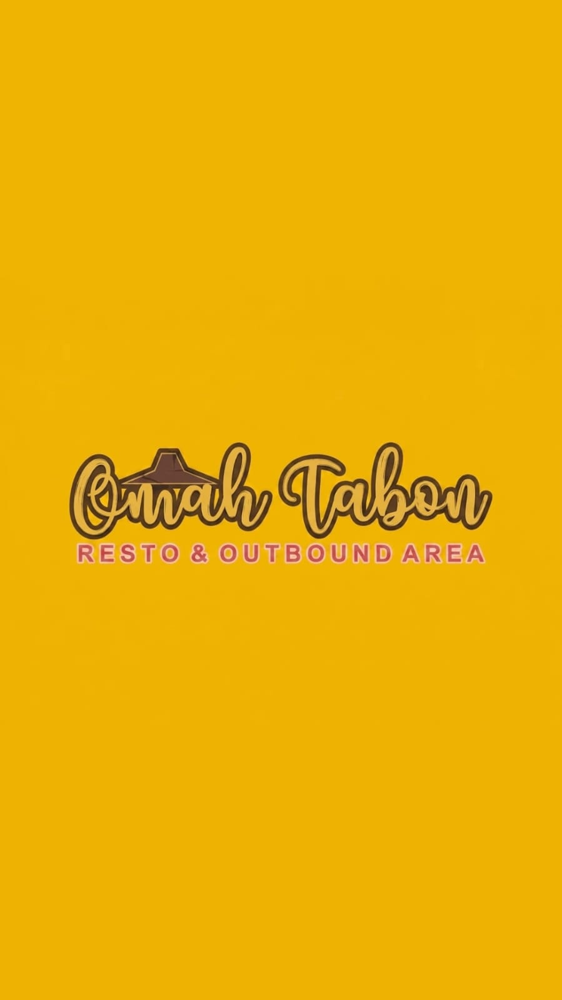
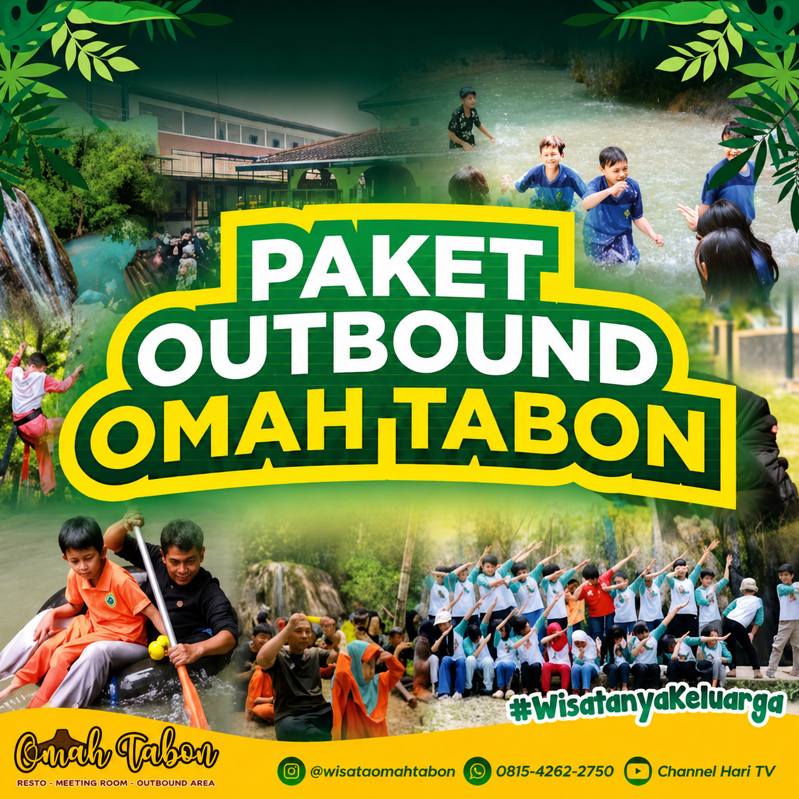
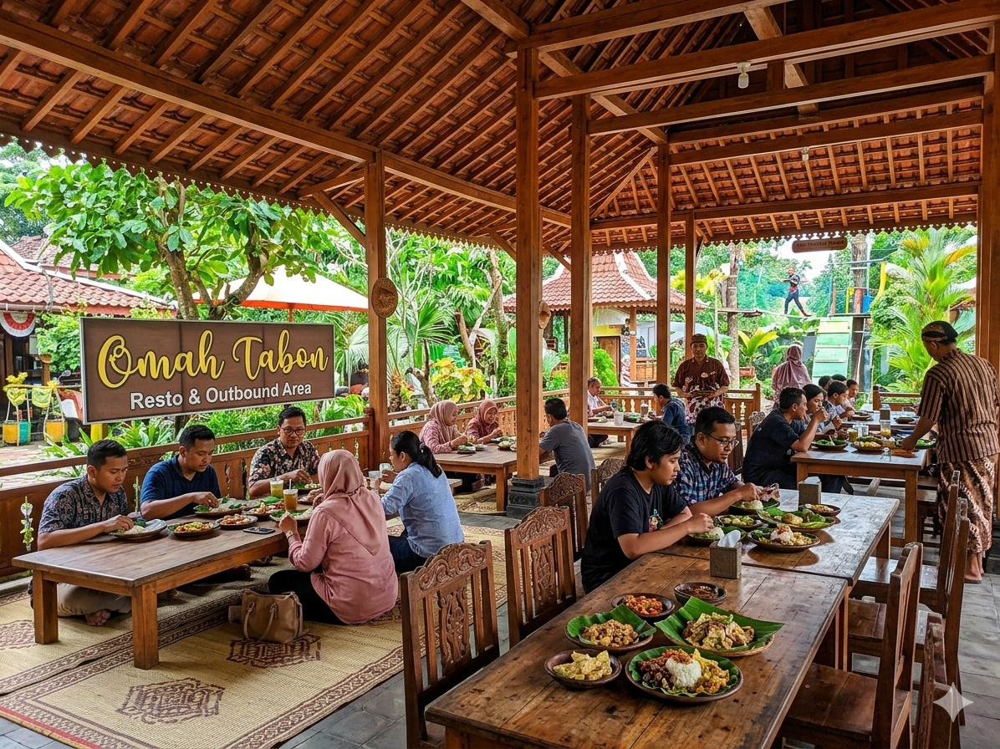
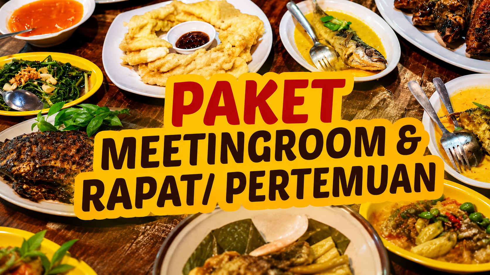
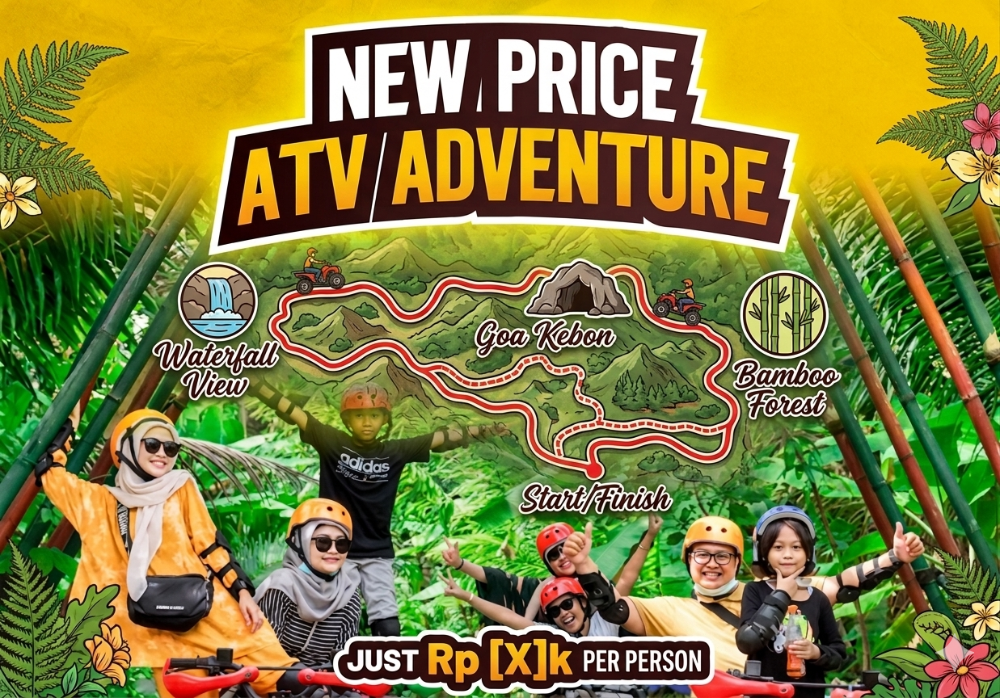

OMAH TABONOmah Tabon Resto & Outbound Area berdiri pada tanggal 19 Februari 2020. Berawal dari sebidang lahan yang memiliki luas 1.200 m² yang terletak di Kalurahan Krembangan lll, Kapanewon Panjatan, Kabupaten Kulon Progo, Daerah Istimewa Yogyakarta, yang kemudian dikembangkan menjadi tempat wisata keluarga yang nyaman dan edukatif. Nama “Omah Tabon” memiliki arti rumah asal atau rumah leluhur, yang menggambarkan suasana kekeluargaan dan kenyamanan.
Menjadi pilihan bahagia, wisatanya keluarga dengan memadukan potensi sajian kuliner, alam, pendidikan, digital dan hobby.

Aktivitas outbound seru dan edukatif untuk keluarga, sekolah, dan perusahaan.

Nikmati sajian kuliner dengan suasana alam yang nyaman dan indah.

Ruang meeting profesional untuk gathering, rapat, dan acara perusahaan.

Rasakan pengalaman ATV dengan jalur alam yang menantang dan menyenangkan.
Omah Tabon Resto & Outbound Area berlokasi di Kalurahan Krembangan III, Kapanewon Panjatan, Kabupaten Kulon Progo, Daerah Istimewa Yogyakarta.
Omah Tabon Resto & Outbound Area
Krembangan III, Panjatan, Kabupaten Kulon Progo, Daerah Istimewa Yogyakarta
Buka Google Maps